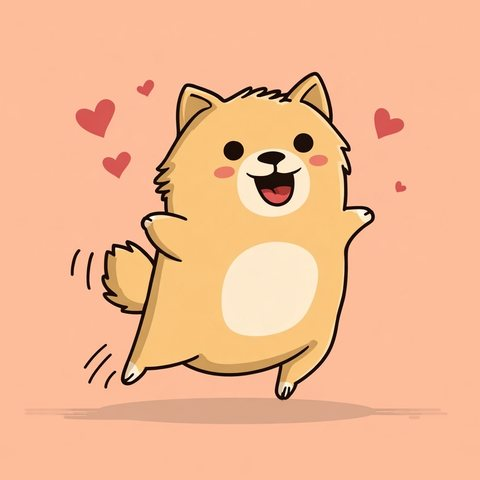
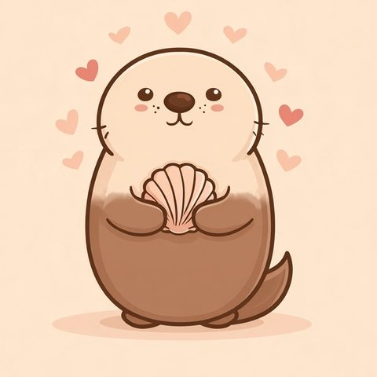

🎁 メロい度タイプ別のプレゼント
PR このページはAmazonアソシエイトのリンクを含む広告です。紹介しているのはタイプの傾向から考えた提案で、好みは人それぞれです。

わんこ系(全力わんこメロ)の友達へのプレゼント
既読と同時に返信が飛ぶ全力タイプ。推し活まわりや、出かける日に持ち歩ける小物が向いていそうです。
予算の目安 〜¥1,500
Amazonの検索結果には、この価格帯の外の商品も出ることがあります。
PR(広告)「これ食べて!」と誰かに配りたくなる人の手元に。種類が多いほど、分け合う相手の分まで足りそうです。 個包装のお菓子アソートをAmazonで探す ¥1,500以下で検索消えもの (新しいタブで開きます) PR(広告)推しの色をバッグに付けて歩ける小物。好きを隠さない人の荷物に、ひとつ足すなら使い道がありそうです。 推し色のリボンチャームをAmazonで探す ¥1,500以下で検索色は相手に合わせやすい (新しいタブで開きます)予算の目安 ¥1,500〜3,000
Amazonの検索結果には、この価格帯の外の商品も出ることがあります。
PR(広告)思い立ったらすぐ出かける人のカバンに、入れっぱなしにできる一本。急な雨の日に出番がありそうです。 軽量の折りたたみ傘をAmazonで探す ¥1,500〜3,000の価格帯で検索使う人を選ばない (新しいタブで開きます) PR(広告)推しのグッズを外側に見せて歩ける袋。好きを堂々と出すタイプの持ち物として、しっくりきそうです。 推し活用の透明トートバッグをAmazonで探す ¥1,500〜3,000の価格帯で検索推し活なら使い道が明確 (新しいタブで開きます)避けたいもの: ひとりで静かに楽しむ系の品より、見せたり話したりできる品の方が合いそうです。
添えるなら「全力のあなたが好き!」

ゆるくま系(ほっこり安心メロ)の友達へのプレゼント
何も聞かずに「おつかれ」と飲み物を置いてくれる人。部屋で使う小物や飲み物の消えものが候補になりそうです。
予算の目安 〜¥1,500
Amazonの検索結果には、この価格帯の外の商品も出ることがあります。
PR(広告)「おつかれ」と差し出す一杯を、今度は自分のために。味を選べる詰め合わせなら外しにくそうです。 ティーバッグのアソートをAmazonで探す ¥1,500以下で検索消えもの (新しいタブで開きます) PR(広告)帰りたくなくなる部屋の主の、足元に一枚。無地なら部屋のどこに置いても浮かなそうです。 ミニサイズのひざ掛けをAmazonで探す ¥1,500以下で検索サイズ選び不要 (新しいタブで開きます)予算の目安 ¥1,500〜3,000
Amazonの検索結果には、この価格帯の外の商品も出ることがあります。
PR(広告)お湯を注ぐだけの一杯を、誰かに出す分も自分の分も。配る側に回りがちな人の棚に常備されそうです。 ココアのスティック詰め合わせをAmazonで探す ¥1,500〜3,000の価格帯で検索消えもの (新しいタブで開きます) PR(広告)長居が始まる部屋の、定位置を一つ増やす品。来た人が座る場所にも、自分の場所にもなりそうです。 もちもちのクッションをAmazonで探す ¥1,500〜3,000の価格帯で検索好みが分かれにくい無地 (新しいタブで開きます)避けたいもの: 外に持ち出す派手な小物より、部屋の中で毎日触れる品の方が合いそうです。
添えるなら「そばにいてくれてありがとう。」

ツンねこ系(ギャップ全開メロ)の友達へのプレゼント
返信はスタンプ1個なのに推しの話は早口。表と裏で顔が変わる人には、見た目と中身に落差のある品が面白そうです。
予算の目安 〜¥1,500
Amazonの検索結果には、この価格帯の外の商品も出ることがあります。
PR(広告)普段のそっけなさに合う無地の実用品。何を渡しても「別に」と言う人でも、使い道には困らなそうです。 ミニタオルハンカチをAmazonで探す ¥1,500以下で検索サイズ選び不要 (新しいタブで開きます) PR(広告)注ぐと別の顔が出てくるカップ。クールな仮面が3秒で剥がれる人の落差と、どこか似ています。 温度で柄が変わるマグカップをAmazonで探す ¥1,500以下で検索使う人を選ばない (新しいタブで開きます)予算の目安 ¥1,500〜3,000
Amazonの検索結果には、この価格帯の外の商品も出ることがあります。
PR(広告)表向きはシンプルな実用品。毎日使うものなので、無地なら持ち主の雰囲気を邪魔しなそうです。 レザー調のパスケースをAmazonで探す ¥1,500〜3,000の価格帯で検索好みが分かれにくい無地 (新しいタブで開きます) PR(広告)普段はバッグにしまっておいて、見せる相手だけに開く袋。推しの話で早口になる瞬間と相性がよさそうです。 ぬいぐるみ用の推し活ポーチをAmazonで探す ¥1,500〜3,000の価格帯で検索推し活なら使い道が明確 (新しいタブで開きます)避けたいもの: みんなの前で開けさせるような派手な包みより、あとでこっそり開けられる品の方が合いそうです。
添えるなら「その顔、独り占めしたい。」
きつね系(読めない余韻メロ)の友達へのプレゼント
たまに置いていく一言が妙に残る人。短い言葉を残す道具や、さりげない小物が候補になりそうです。
予算の目安 〜¥1,500
Amazonの検索結果には、この価格帯の外の商品も出ることがあります。
PR(広告)多くを語らない人に、説明のいらない消えものを。ひとつずつ減っていく量なら、渡す側も気負わずに済みそうです。 個包装チョコの詰め合わせをAmazonで探す ¥1,500以下で検索消えもの (新しいタブで開きます) PR(広告)読みかけの本に差しておく小さな金属。持ち物を増やさない人でも、本の間になら置き場がありそうです。 真鍮のしおりをAmazonで探す ¥1,500以下で検索サイズ選び不要 (新しいタブで開きます)予算の目安 ¥1,500〜3,000
Amazonの検索結果には、この価格帯の外の商品も出ることがあります。
PR(広告)鍵と一緒に毎日持ち歩く、主張の少ない実用品。無地の革なら、去り際の横顔に合いそうです。 レザーのキーホルダーをAmazonで探す ¥1,500〜3,000の価格帯で検索好みが分かれにくい無地 (新しいタブで開きます) PR(広告)手紙の封に、ひとつだけ印を残す道具。短い言葉で去っていく人の流儀に、向いていそうです。 シーリングスタンプのセットをAmazonで探す ¥1,500〜3,000の価格帯で検索柄を選ばなくても使える (新しいタブで開きます)避けたいもの: 音や光でにぎやかに主張する品より、静かに持ち歩ける品の方が合いそうです。
添えるなら「また、話の続きを。」

カワウソ系(無自覚オールメロ)の友達へのプレゼント
どの系統にも寄らず、相手に合わせて変わる人。日によって使い方を変えられる品が候補になりそうです。
予算の目安 〜¥1,500
Amazonの検索結果には、この価格帯の外の商品も出ることがあります。
PR(広告)味がいくつも入った缶なら、その日の気分で選べる。全方位に合わせる人の机に、置き場がありそうです。 缶入りキャンディの詰め合わせをAmazonで探す ¥1,500以下で検索消えもの (新しいタブで開きます) PR(広告)一本で何色も書き分けられる道具。相手に合わせて色を変える人の筆箱に、そのまま収まりそうです。 多色ボールペンをAmazonで探す ¥1,500以下で検索使う人を選ばない (新しいタブで開きます)予算の目安 ¥1,500〜3,000
Amazonの検索結果には、この価格帯の外の商品も出ることがあります。
PR(広告)何を入れるかは本人次第の小さな袋。日によって持ち物が変わる人でも、使い道に困らなそうです。 無地のミニポーチをAmazonで探す ¥1,500〜3,000の価格帯で検索サイズ選び不要 (新しいタブで開きます) PR(広告)その日の顔に合わせて一冊を選べるセット。ひとつに決めない人の机に、向いていそうです。 表紙違いのノート3冊セットをAmazonで探す ¥1,500〜3,000の価格帯で検索消えもの (新しいタブで開きます)避けたいもの: 「あなたはこういう人だから」と決めつける一点ものより、使い方を本人に委ねられる品の方が合いそうです。
添えるなら「気づいてないのは本人だけ。」